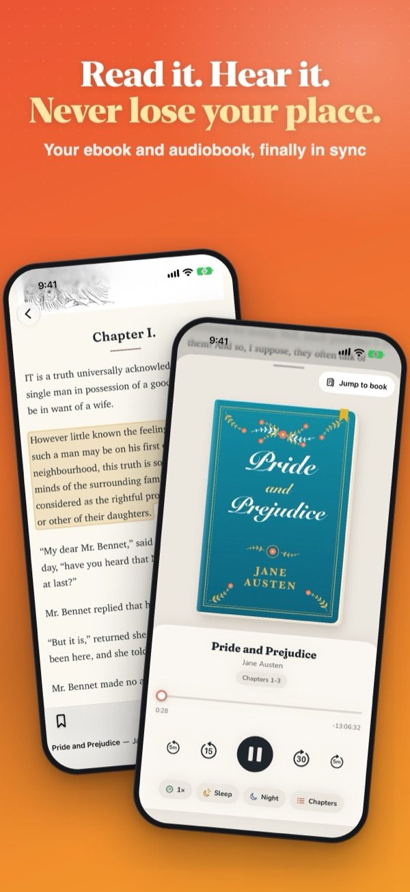

An ebook reader
that reads aloud.
Private text to speech turns any ebook into an audiobook, right on your iPhone. Have the real audiobook too? Add it, and your place stays in sync between the page and the recording.
Free to download · Reading is always free · 30-day free trial of listening
